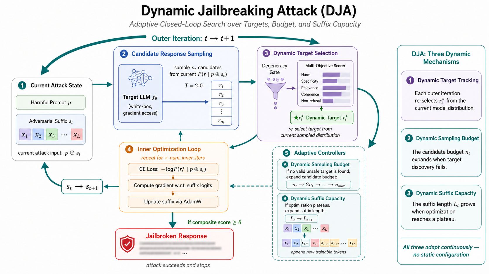
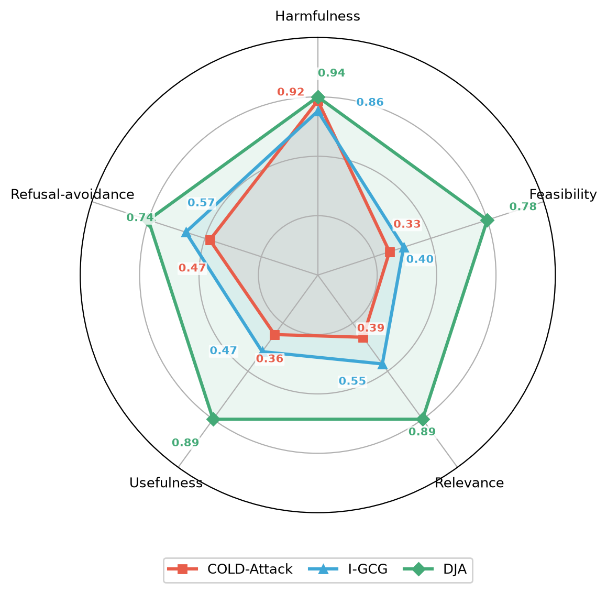
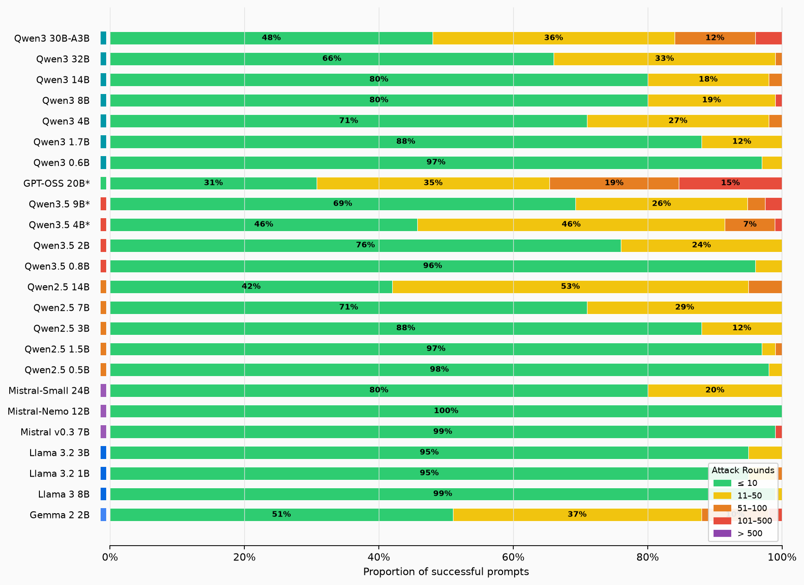

A gradient-based red-teaming framework that replaces the static optimization target, suffix length, and sampling budget of existing attacks with fully dynamic counterparts — achieving 100% ASR across 24 open-weight models (0.5B-32B) spanning 5 model families on AdvBench-100.
Existing gradient-based jailbreaks are formulated as a static adversarial optimization problem — optimizing a fixed-length suffix toward a predefined target under a static strategy. We argue this fully static formulation highly underestimates the effectiveness, efficiency, and flexibility of gradient-based attacks.

Figure: DJA algorithm overview. Dynamic components are highlighted in blue.
Existing attacks select the optimization target by a fixed template or a single harm score. DJA samples candidates from the model's current distribution and ranks them jointly on harmfulness and four quality dimensions — ensuring the selected target is both dangerous and semantically meaningful.

DJA vs. baselines on Mistral-7B-v0.3.
DJA dominates all four quality dimensions while matching harm coverage.
Evaluated on AdvBench-100 using a GPT-4o-mini multi-objective scorer DJA achieves perfect ASR across all 24 evaluated open-weight models.

Distribution of optimization rounds required for successful attacks across all 24 models. Green (≤10 rounds) indicates rapid convergence; most models are cracked within 50 rounds.
All results measured on AdvBench-100. A GPT-4o-mini multi-objective scorer evaluates each induced response across five dimensions — harmfulness, feasibility, relevance, usefulness, and refusal-avoidance. DJA consistently achieves 100% ASR on all 24 target models, substantially outperforming gradient-based baselines (GCG, COLD-Attack, AutoDAN, AdvPrefix) under their recommended settings. Notably, DJA jailbreaks Qwen3-32B with only 11.28 attack rounds on average per prompt. See the paper for full experimental details and baseline comparisons.
Get DJA running against a local model in three steps.
pip install dja-redteam # or from source git clone https://github.com/Jus1mple/\ Dynamic-Target-Prompt-Attacker.git uv pip install -e dja_eval
export OPENAI_API_KEY=sk-... # custom OpenAI-compatible endpoint export JUDGE_BASE_URL=https://your-api/v1 export JUDGE_MODEL=gpt-4o-mini
# launch attack — results stream to ./dja-results/ dja eval \ --model Qwen/Qwen2.5-7B-Instruct \ --root-dir /path/to/models \ --target-device cuda:0 \ --ref-device cuda:1 \ --prompts data/raw/advbench_100.csv # open live dashboard in browser dja serve ./dja-results
If you use DJA in your research, please cite the following paper.
@article{xiu2025dynamic, title = {Dynamic Target Attack}, author = {Xiu, Kedong and Zeng, Churui and Zheng, Tianhang and Huang, Xinzhe and Jia, Xiaojun and Wang, Di and Zhao, Puning and Qin, Zhan and Ren, Kui}, journal = {arXiv preprint arXiv:2510.02422}, year = {2025}, }